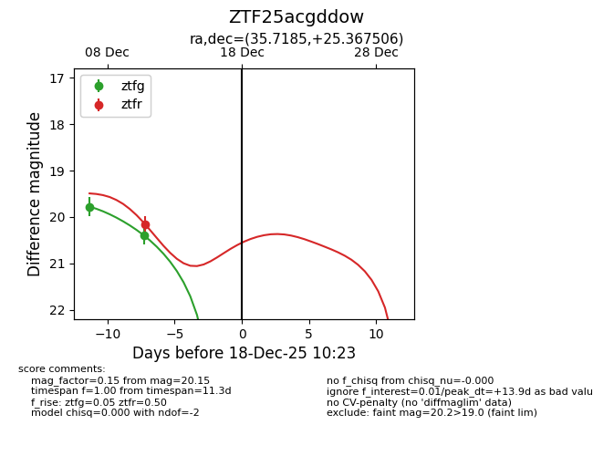
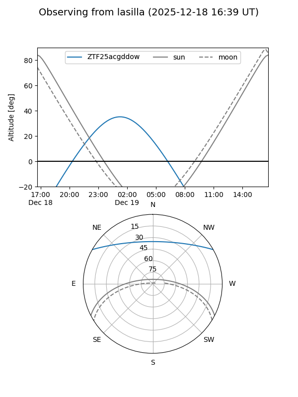
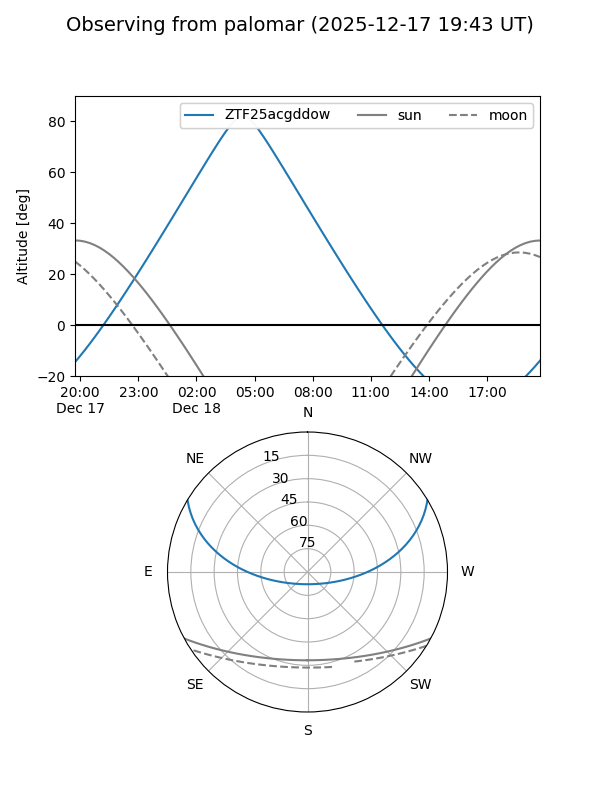

ZTF25acgddow
Target ZTF25acgddow at 2025-12-18 11:17
Aliases and brokers:
FINK: fink-portal.org/ZTF25acgddow
Lasair: lasair-ztf.lsst.ac.uk/objects/ZTF25acgddow
ALeRCE: alerce.online/object/ZTF25acgddow
alt names
ZTF25acgddow (ztf,fink_ztf)
Coordinates:
equatorial (ra, dec) = 35.7185,+25.36751
equatorial (HMS+DMS) = 02:22:52.44,+25:22:03.02
galactic (l, b) = (147.6947,-33.06999)
Photometry
last ztfg=20.40, ztfr=20.15
2 ztfg, 1 ztfr detections
Lightcurve

Visibility


Additional plots